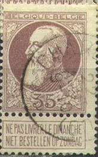
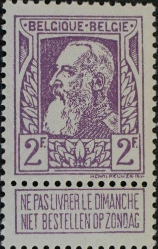
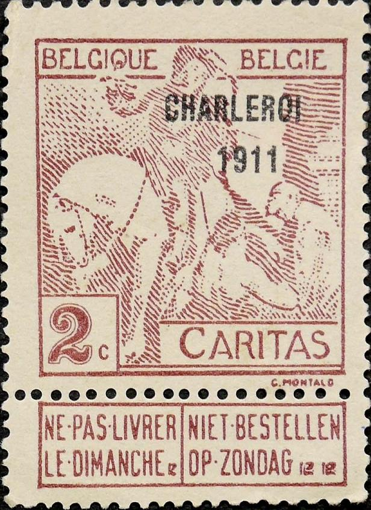

Return To Catalogue - Belgium 1849-1865, King Leopold - Belgium 1866-1869 Lions - Belgium 1869-1892 - Belgium 1914-15 Red Cross issues - Belgium 1893-1911 - Belgium 1912 Arms and King Albert issue - Belgium 1915 onwards
Currency: 100 Centimes = 1 Franc
Note: on my website many of the
pictures can not be seen! They are of course present in the
catalogue;
contact me if you want to purchase it.
Gereral remarks about stamps with tab; when the tab is no longer attached to the stamp, the stamp is less valuable.
For stamps of Belgium 1869-1892, click here.
1 c grey 2 c yellow 2 c brown (1894) 5 c green
For the specialist: the 1 c , 2 c brown and 5 c green were also issued without ornaments where the stamp and the tab joins in 1907. These stamps are perforated 14.
Value of the stamps |
|||
vc = very common c = common * = not so common ** = uncommon |
*** = very uncommon R = rare RR = very rare RRR = extremely rare |
||
| Value | Unused | Used | Remarks |
| 1 c | vc | vc | with ornaments |
| 1 c | * | vc | without ornaments |
| 2 c yellow | c | * | with ornaments |
| 2 c brown | c | vc | with ornaments |
| 2 c brown | * | * | without ornaments |
| 5 c | c | vc | with ornaments |
| 5 c | ** | vc | without ornaments |
I have seen postal stationery in this design: 5 c green (with tab and ornaments) and 5 c green (with tab but no ornaments).
(Precancel)
More info on precancels can be found in the book: 'Catalogue des Preos Belge 1894-1937' by Jean Lepingle (in French)
Some very rare non-issued stamps exist with overprint 'CHINE' and value in 'CENTS'. I have seen a Hialeah forgery of a '2 CENTS' on 5 c green stamp, made with a computer scanner and printer. The printing is very bad and the perforation is wrong. They are often offered on E-bay.
Some forged 'CHINE Specimen' Hialeah overprints. The stamps are
also forged (made by a computer scanner and printer), reduced
sizes.

5 c green on red 10 c red on blue 25 c blue on red
For the specialist: these stamps are perforated 14.
Value of the stamps |
|||
vc = very common c = common * = not so common ** = uncommon |
*** = very uncommon R = rare RR = very rare RRR = extremely rare |
||
| Value | Unused | Used | Remarks |
| 5 c | c | c | |
| 10 c | c | c | |
| 25 c | c | * | |
I think this is a forged "BRUGES 1 DECE 8-M 1896"
cancel (see also the 1896 issue for more info on forged cancels).

5 c lilac 10 c brown 10 c lilac
For the specialist, these stamps are perforated 14.
Value of the stamps |
|||
vc = very common c = common * = not so common ** = uncommon |
*** = very uncommon R = rare RR = very rare RRR = extremely rare |
||
| Value | Unused | Used | Remarks |
| 5 c | c | c | |
| 10 c brown | * | * | |
| 10 c lilac | c | c | |
According to the following website:
https://www.filatelia.fi/forgeries/forged_postmarks.html, the
following forged cancels exist on this and the previous 1894
issue:
Anvers: 15 mai 8-9 1894, 16 sept 19-20 1897, 5 or 19 nove 9-10
1901.
Bruges: 1 dece 8-M 1896.
Bruxelles: 3 sept 8-9 1894, 22 janv 10-M 1897, 5 avril 3-4 1897.
Bruxelles 5: 22 janv 10-M 1897.
Charleroi Station: 12 mai 18-19 1902.
Liege: 12 mars 1-2 1894, 18 or 19 juin 8-9 1897, 8 avril 10-11
1899.
St. Bernhard: 10.I.01, 14.II.01, 4.III.01, 12.IV.01, 7.VI.01,
21.VIII.01, 17.XI.01, 15.XII.01, 22.V.02, 30.VI.02, 24.VII.02,
27.IX.02, 25.X.02.

A forged "BRUXELLES 5 AVRIL 3-4 1897" cancel



10 c red 20 c green 25 c blue 35 c brown 50 c grey 1 F yellow 2 F lilac
These stamps are perforated 14.
Value of the stamps |
|||
vc = very common c = common * = not so common ** = uncommon |
*** = very uncommon R = rare RR = very rare RRR = extremely rare |
||
| Value | Unused | Used | Remarks |
| 10 c | * | vc | |
| 20 c | ** | vc | |
| 25 c | ** | vc | |
| 35 c | ** | c | |
| 50 c | *** | * | |
| 1 F | *** | ** | |
| 2 F | *** | ** | |
I have seen postal stationery in this design (with tab): 10 c red and 25 c blue.
Some very rare non-issued stamps exist with overprint 'CHINE' and value in 'CENTS'. I have seen a Hialeah forgery of a '4 CENTS' on 10 c red stamp, made with a computer scanner and printer. The printing is very bad and the perforation is wrong. They are often offered on E-bay.
I've been told that the next stamps are forgeries of the 20 c, 35 c and 2 F values on authentic paper taken from the border of the sheet. They were made in the United States.


Forgeries
Some forged 'CHINE Specimen' Hialeah overprints. The stamps are
also forged (made by a computer scanner and printer), reduced
sizes.
Another forgery of the 2 F exists, in which the
epaulette of the King ends at the corner of the square with '2F';
in the genuine stamps it ends much further to the right.
The Serrane Guide mentions a forgery with forged cancel
"DINANT 15 AOUT 1910".
(The two types of the 10 c, type I left , type II right)
1 c grey (type II) 1 c green (type I) 2 c brown 5 c blue 10 c red

("1911" and "CHARLEROI 1911" overprint)
(Overprinted "1911", reduced size)
These stamps exist in 2 types, both types exist with overprint "1911" or "CHARLEROI 1911".
vc = very common c = common * = not so common ** = uncommon |
*** = very uncommon R = rare RR = very rare RRR = extremely rare |
|||||
Type I |
Type II |
|||||
| Value | Unused | Used | Remarks | Unused | Used | Remarks |
| 1 c | * | * | * | * | ||
| 2 c | * | * | * | * | ||
| 5 c | * | * | * | * | ||
| 10 c | * | * | * | * | ||
| Overprinted '1911' | ||||||
| 1 c | *** | *** | *** | *** | ||
| 2 c | *** | *** | *** | *** | ||
| 5 c | * | * | * | * | ||
| 10 c | * | * | * | * | ||
Overprinted 'CHARLEROI 1911' |
||||||
| 1 c | * | * | * | * | ||
| 2 c | * | * | * | * | ||
| 5 c | * | * | * | * | ||
| 10 c | * | * | * | * | ||
In 1926 a similar design was issued with inscription "INONDATIONS WATERSNOOD" at the bottom (two types): 1 F + 1 F blue.

This "1911" overprint might have been forged.
Forgeries of the basic stamps exist.

This might be a forgery, the hat of the person does not touch the
upper frameline.
For Belgium 1912 Arms and King Albert issue, click here
{kind=link}
{kind=link}